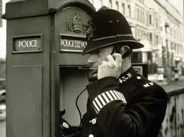
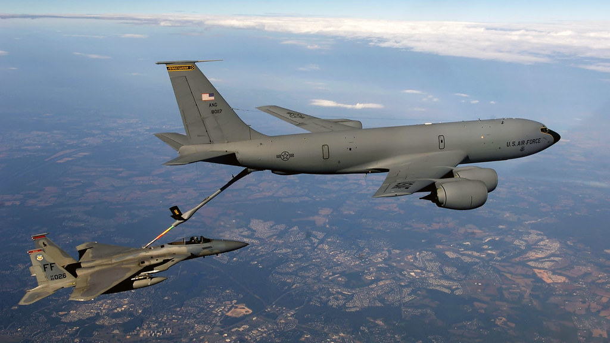

Boarding and Seating
DB Cooper boarded Northwest Orient Airlines Flight 305, a Boeing 727, on the afternoon of November 24, 1971, at Portland International Airport. He purchased a one-way ticket to Seattle under the alias Dan Cooper. Cooper was described as a middle-aged man in a dark suit, wearing a black tie and a white shirt. He took seat 18C, which was in the rear of the aircraft.
< img src="board.webp">
The Note
Cooper handed a note to flight attendant Florence Schaffner shortly after takeoff. Schaffner initially ignored the note, assuming it was a flirtation or a request for assistance. Cooper leaned towards her and whispered, "Miss, you'd better look at that note. I have a bomb." The note demanded $200,000 in cash, four parachutes, and a fuel truck to be available in Seattle for refueling.
Communication with Authorities
Schaffner alerted the cockpit crew about the situation. Captain William Scott and First Officer Robert Rataczak contacted air traffic control and relayed Cooper's demands. They also notified Northwest Orient Airlines and the FBI.

Arrival in Seattle
Flight 305 landed at Seattle-Tacoma International Airport at 5:39 PM, around 30 minutes behind schedule. The airport was temporarily closed to other air traffic, and the passengers were evacuated. Law enforcement and airline officials began negotiating with Cooper.

Delivery of Ransom and Parachutes
Cooper allowed the 36 passengers to disembark once his demands were met. The ransom money, consisting of $20 bills totaling $200,000, and four parachutes (two primary and two reserve), were delivered to the aircraft by FBI agents and airline personnel.

Refuelling and Departure
After the delivery of the ransom and parachutes, Cooper instructed the remaining crew to fly the plane to Mexico City at a low altitude and with the landing gear deployed. He also demanded that the cabin remain unpressurized and the wing flaps be set at 15 degrees.

Parachuting and Disappearance
At approximately 8:00 PM, somewhere over the rugged terrain of southwestern Washington state or possibly southern Oregon, Cooper opened the rear airstair of the aircraft and jumped into the night sky with the parachute and ransom money. The plane continued to Reno, Nevada, as instructed by Cooper.